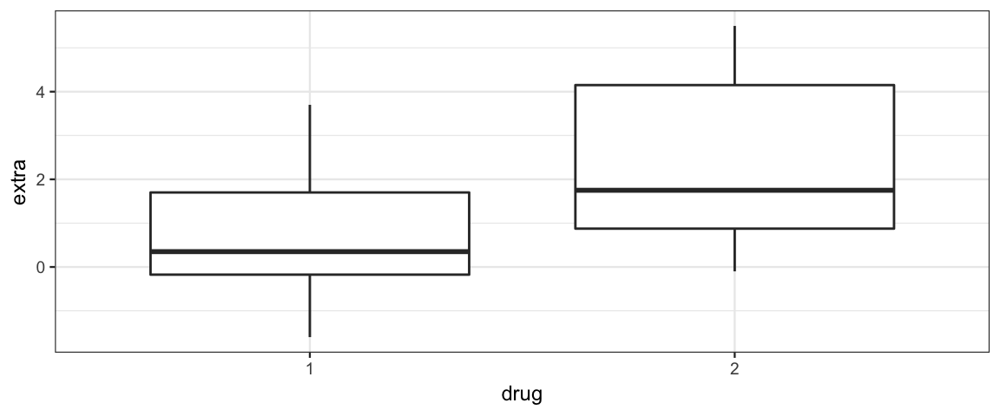
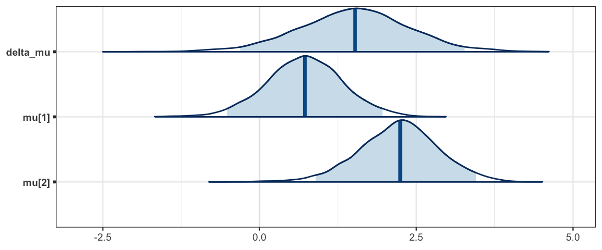
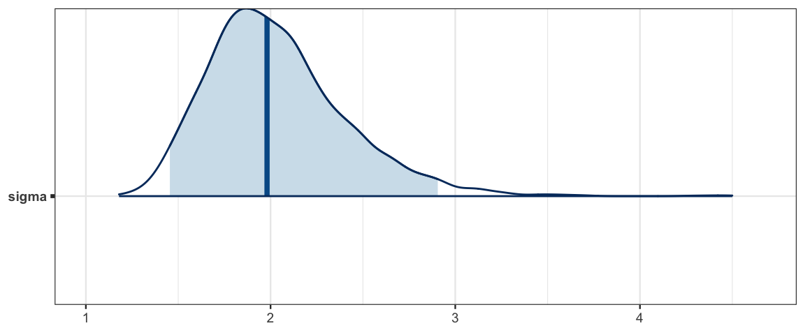
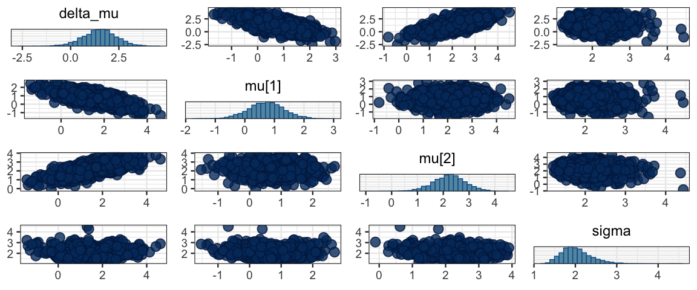
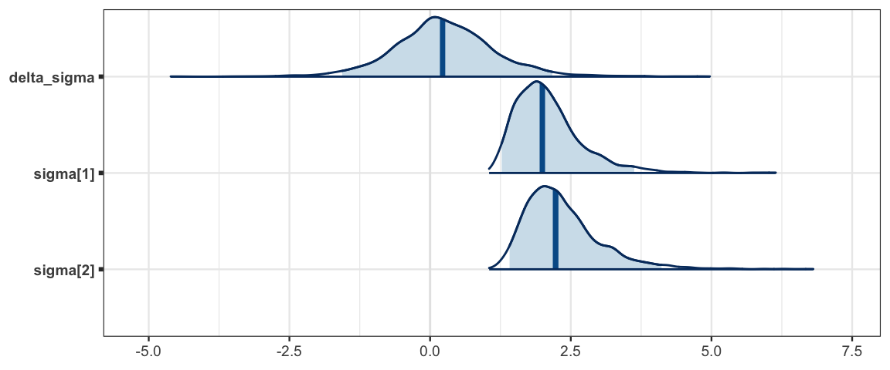
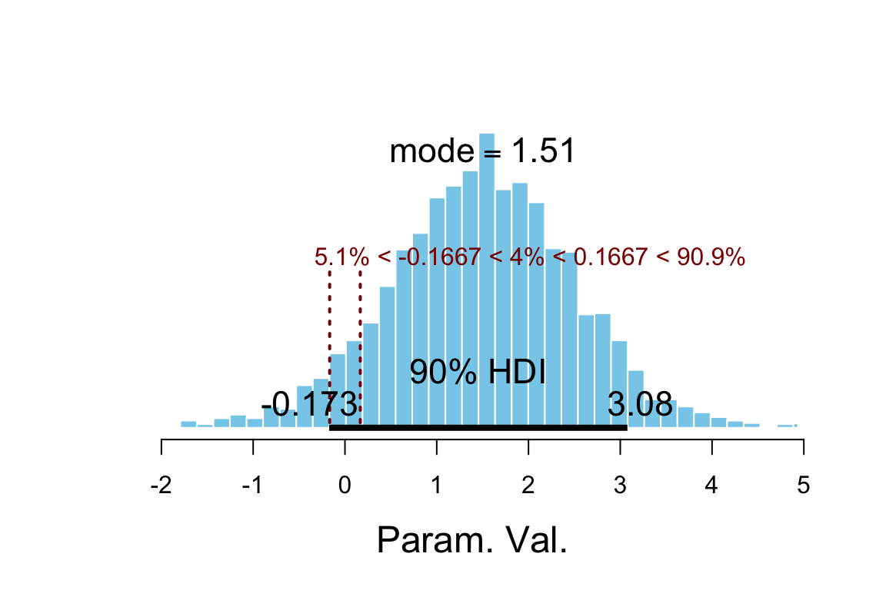
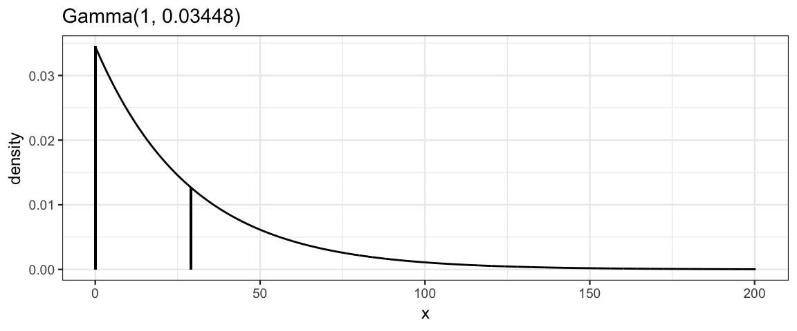

16 Estimating One and Two Means
16.1 Basic Model for Two Means
16.1.1 Data
Two variables
- metric response
- dichotomous explanatory
16.1.2 Model
The traditional starting point for modeling means is to assume that the each group is sampled from a normal distribution with unknown mean and a common standard deviation. (We’ll see that is no harder to have different standard deviations.)
So for two groups our model has three parameters: two means (\(\mu_1\) and \(\mu_2\)) and one standard deviation \(\sigma\).
Of course, we also need priors for these parameters. A common prior for the means is a normal distribution. We will start with a uniform prior for the standard deviation, but discuss better alternatives shortly.
That gives the following template for our model:
\[\begin{align*} Y_{i|g} & \sim {\sf Norm}(\mu_g, \sigma) \\ \mu_g & \sim {\sf Norm}(?, ?) \\ \sigma & \sim {\sf Unif}(?, ?) \end{align*}\]
The questions marks will be filled in based on considerations of the scale (order of magnitude of the data) and the amount of regularizing we want to do.
16.2 An Old Sleep Study
Cushny, A. R. and Peebles, A. R. (1905) “The action of optical isomers: II hyoscines.” The Journal of Physiology 32, 501–510.
Design: Subjects sleep habits were compared without a sleep inducing drug and then with to see how two different drugs affected sleep.
16.2.1 Data
Let’s look at the data. (extra = additional sleep on drug; group should
really be drug, so let’s rename it.)
library(ggformula)
library(dplyr)
sleep <-
datasets::sleep %>% rename(drug = group)
gf_boxplot(extra ~ drug, data = sleep)
df_stats(extra ~ drug, data = sleep)| drug | min | Q1 | median | Q3 | max | mean | sd | n | missing |
|---|---|---|---|---|---|---|---|---|---|
| 1 | -1.6 | -0.175 | 0.35 | 1.70 | 3.7 | 0.75 | 1.789 | 10 | 0 |
| 2 | -0.1 | 0.875 | 1.75 | 4.15 | 5.5 | 2.33 | 2.002 | 10 | 0 |
16.2.2 Model
It is simple enough to convert the model description above into a JAGS model, but we need to fill in those question marks. Let’s try this:
- mean for prior on \(\mu_g\): 0
- corresponds to the drug having no impact on sleep
- allows drug to increase or decrease sleep without prejudice
- any other number would require more justification
- will tend to pull estimates toward 0 (shrinkage) – we are requiring evidence to convince us that the drug does something to sleep.
sd for prior on \(\mu_g\): 3
- Says we are 95% certain that the average impact of a drug will be between -6 and 6 additional hours of sleep and that it is very unlikely the drug will change sleep by 9 or more hours. This is fairly week prior (6 extra hours of sleep would be a lot). This might be chosen in consultation with scientists who are more familiar with what is reasonable.
range for \(\sigma\): One crude way to set the prior is to give a ball mark estimate for the the standard deviation of the amount of sleep change in each treatment group and then make sure we cover a range 3 orders of magnitude in each direction.
We can experiment with different priors to see how the impact results.
library(R2jags)
sleep_model <- function() {
for (i in 1:Nobs) {
extra[i] ~ dnorm(mu[drug[i]], 1 / sigma^2)
}
for (d in 1:Ndrugs) {
mu[d] ~ dnorm(0, 1/3^2) # sd = 3
}
sigma ~ dunif(2/1000, 2 * 1000) # 3 orders of mag each way of 2
delta_mu <- mu[2] - mu[1]
tau <- 1 / sigma^2
}
sleep_jags <-
jags(
model = sleep_model,
parameters.to.save = c("mu", "sigma", "delta_mu"),
data = list(
extra = sleep$extra,
drug = sleep$drug,
Nobs = nrow(sleep),
Ndrugs = 2
),
DIC = FALSE # because we haven't discussed deviance yet
)library(CalvinBayes)
library(bayesplot)
summary(sleep_jags)## fit using jags
## 3 chains, each with 2000 iterations (first 1000 discarded)
## n.sims = 3000 iterations saved
## mu.vect sd.vect 2.5% 25% 50% 75% 97.5% Rhat n.eff
## delta_mu 1.505 0.896 -0.309 0.933 1.523 2.075 3.269 1.001 3000
## mu[1] 0.717 0.622 -0.518 0.315 0.723 1.131 1.962 1.001 3000
## mu[2] 2.221 0.642 0.894 1.814 2.243 2.638 3.455 1.001 3000
## sigma 2.035 0.379 1.455 1.772 1.980 2.237 2.905 1.003 820sleep_mcmc <- as.mcmc(sleep_jags)
mcmc_areas(sleep_mcmc, prob = 0.95, regex_pars = "mu")
mcmc_areas(sleep_mcmc, prob = 0.95, regex_pars = "sigma")
mcmc_pairs(sleep_mcmc)
mosaic::prop( ~(delta_mu > 0), data = posterior(sleep_jags))## prop_TRUE
## 0.95216.2.3 Separate standard deviations for each group
sleep_model2 <- function() {
for (i in 1:Nobs) {
extra[i] ~ dnorm(mu[drug[i]], 1/sigma[drug[i]]^2)
}
for (d in 1:Ndrugs) {
mu[d] ~ dnorm(0, 1/3^2)
sigma[d] ~ dunif(2/1000, 2 * 1000)
tau[d] <- 1 / sigma[d]^2
}
delta_mu <- mu[2] - mu[1]
delta_sigma <- sigma[2] - sigma[1]
}
sleep_jags2 <-
jags(
model = sleep_model2,
parameters.to.save = c("mu", "sigma", "delta_mu", "delta_sigma", "tau"),
data = list(
extra = sleep$extra,
drug = sleep$drug,
Nobs = nrow(sleep),
Ndrugs = 2
),
DIC = FALSE
)library(bayesplot)
library(CalvinBayes)
summary(sleep_jags2)## fit using jags
## 3 chains, each with 2000 iterations (first 1000 discarded)
## n.sims = 3000 iterations saved
## mu.vect sd.vect 2.5% 25% 50% 75% 97.5% Rhat n.eff
## delta_mu 1.491 1.002 -0.523 0.853 1.513 2.140 3.451 1.001 3000
## delta_sigma 0.254 0.935 -1.562 -0.298 0.223 0.783 2.170 1.001 3000
## mu[1] 0.712 0.672 -0.586 0.286 0.701 1.136 2.061 1.001 3000
## mu[2] 2.203 0.736 0.758 1.747 2.229 2.667 3.592 1.001 2600
## sigma[1] 2.103 0.611 1.272 1.679 1.994 2.373 3.627 1.001 3000
## sigma[2] 2.357 0.695 1.412 1.883 2.230 2.666 4.112 1.001 3000
## tau[1] 0.278 0.140 0.076 0.178 0.251 0.355 0.618 1.001 3000
## tau[2] 0.222 0.114 0.059 0.141 0.201 0.282 0.501 1.001 3000sleep_mcmc2 <- as.mcmc(sleep_jags2)
mcmc_areas(sleep_mcmc2, prob = 0.95, regex_pars = "mu")
mcmc_areas(sleep_mcmc2, prob = 0.95, regex_pars = "sigma")
mosaic::prop( ~(delta_mu > 0), data = posterior(sleep_jags2))## prop_TRUE
## 0.9303mosaic::prop( ~(delta_sigma > 0), data = posterior(sleep_jags2))## prop_TRUE
## 0.62hdi(sleep_jags2, pars = c("delta"))par lo hi prob chain —- — — —– ——
hdi(sleep_jags2)| par | lo | hi | prob | chain |
|---|---|---|---|---|
| delta_mu | -0.5231 | 3.2463 | 0.95 | 1 |
| delta_mu | -0.4663 | 3.3997 | 0.95 | 2 |
| delta_mu | -0.5670 | 3.6046 | 0.95 | 3 |
| delta_sigma | -1.7227 | 2.1318 | 0.95 | 1 |
| delta_sigma | -1.4971 | 2.1057 | 0.95 | 2 |
| delta_sigma | -1.4255 | 2.2211 | 0.95 | 3 |
| mu[1] | -0.5609 | 1.9123 | 0.95 | 1 |
| mu[1] | -0.6925 | 1.9083 | 0.95 | 2 |
| mu[1] | -0.5055 | 2.2318 | 0.95 | 3 |
| mu[2] | 0.7860 | 3.5920 | 0.95 | 1 |
| mu[2] | 0.7949 | 3.5497 | 0.95 | 2 |
| mu[2] | 0.6776 | 3.6541 | 0.95 | 3 |
| sigma[1] | 1.1026 | 3.3793 | 0.95 | 1 |
| sigma[1] | 1.1953 | 3.1850 | 0.95 | 2 |
| sigma[1] | 1.1495 | 3.3457 | 0.95 | 3 |
| sigma[2] | 1.2549 | 3.6323 | 0.95 | 1 |
| sigma[2] | 1.3421 | 3.7643 | 0.95 | 2 |
| sigma[2] | 1.2385 | 3.7057 | 0.95 | 3 |
| tau[1] | 0.0485 | 0.5655 | 0.95 | 1 |
| tau[1] | 0.0605 | 0.5789 | 0.95 | 2 |
| tau[1] | 0.0601 | 0.5433 | 0.95 | 3 |
| tau[2] | 0.0345 | 0.4542 | 0.95 | 1 |
| tau[2] | 0.0460 | 0.4268 | 0.95 | 2 |
| tau[2] | 0.0494 | 0.4590 | 0.95 | 3 |
16.2.4 Comparison to t-test
For those who know about 2-sample t tests:
t.test(extra ~ drug, data = sleep)##
## Welch Two Sample t-test
##
## data: extra by drug
## t = -1.9, df = 18, p-value = 0.08
## alternative hypothesis: true difference in means is not equal to 0
## 95 percent confidence interval:
## -3.3655 0.2055
## sample estimates:
## mean in group 1 mean in group 2
## 0.75 2.33mosaic::prop( ~(delta_mu < 0), data = posterior(sleep_jags2))## prop_TRUE
## 0.0696716.2.5 ROPE (Region of Practical Equivalence)
Just knowing that two things are not the same is not of much practical use if the difference is small. One way to quantify this is to specify a region of practical equivalence (ROPE). We could decide, for example, that we are not interested in differences of less than 10 minutes (1/6 hours). Our ROPE (for the difference in means) would then be the interval \((-1/6, 1/6)\) and we could ask if there is evidence that the true difference lies outside that interval. This could be checked by seeing if an HDI lies completely outside the ROPE.
plot_post(posterior(sleep_jags2)$delta_mu, ROPE = c(-1/6, 1/6),
hdi_prob = 0.9)
## $posterior
## ESS mean median mode
## var1 3000 1.491 1.513 1.51
##
## $hdi
## prob lo hi
## 1 0.9 -0.1725 3.078
##
## $ROPE
## lo hi P(< ROPE) P(in ROPE) P(> ROPE)
## 1 -0.1667 0.1667 0.05067 0.04033 0.90916.3 Variations on the theme
16.3.1 Other distributions for the response
While the normal distributions are commonly used to describe metric response variables, and many things are normally distributed, not everything is.
- Skewed distributions.
If we have reason to believe that the shape of the response distribution (for a given combination of explanatory variables) is skewed (not symmetrical), then we have two options:
a. Transform the response variable.
Perhaps $log(y)$ or some other transformation of why is better described
by a normal distribution than $y$ itself.
b. Choose a skewed distribution.
Althernatively, we could choose a skewed distribution as part of the model.- Distributions with heavier tails.
Values that are quite far from the mean can have a large impact on what values of the man and standard deviation we find credible. If we suspect that the response distribution is likely to heavier tails, we can choose a family of distributions with heavier tails. This also makes our model more robust against outliers so that if the underlying distribution is normal but our data has an unusually large or small observation, the overall fit of the model is less disturbed.
The most commonly used family for this is the family of “student” t-distributions. If you have seen these before, you probably learned that
the student t-distributions have one parameter, called degrees of freedom (usually denoted \(\nu\) – that’s the Greek letter \(\nu\)). This is a shape parameter, and as \(\nu \to \infty\), the t-distributions become more and more like the standard normal distribution. For this reason, we also may refer to \(\nu\) as the normality parameter.
the student t-distributions are symmetric about 0.
the mean, standard deviation, variance, precision are given by
quantity expression valid when mean 0 \(\nu > 1\) standard deviation \(\sqrt{\frac{\nu}{\nu -2}}\) \(\nu > 2\) variance \(\frac{\nu}{\nu -2}\) \(\nu > 2\) standard deviation \(\frac{\nu - 2}{\nu}\) \(\nu > 2\) (These can fail to exist when the integral involved fail to converge.)
We can combine this information to form a more general family of t-distributions by shifting and scaling the student t-distributions. If \(T \sim {\sf T}(\nu)\), then
\[ T' = \mu + \frac{1}{\tau} T \sim {\sf T}(\mu, \tau, \nu)\] will have
- mean: \(\mu\) (provided \(\nu > 1\));
- standard deviation: \(\sigma \sqrt{\frac{\nu}{\nu - 2}}\) (provided \(\nu > 2\)) where \(\sigma = \sqrt{\frac{1}{\tau}}\)
- precision: \(\tau \frac{\nu -2}{\nu}\)
This is how JAGS defines the family of t-distributions. Note that \(\tau\) is not exactly \(\frac{1}{\sigma^2}\), but it is close when \(\nu\) is large.
We can use this more general version of a t-distribution in place of a normal
distribution by adding one additional prior – a prior for \(\nu\).
We want \(\nu >1\), so we will use our add and subtract trick to shift it to
a distribution that is always positive.
One choice would be a shifted exponential
distribution (Gamma distribution with shape parameter 1).
These distributions are heavily skewed, but this is appropriate since
all the action is for small values of \(\nu\). If \(\nu > 30\), the t distributions
are hardly distinguishable from normal distributions.
If we select a distribution with mean 30, then the distribution will be
roughly evenly split between “basically normal” and “more spread out than a
normal distribution”.
# 29 because we will shift by 1
gamma_params(shape = 1, mean = 29, plot = TRUE) 
| shape | rate | scale | mode | mean | sd |
|---|---|---|---|---|---|
| 1 | 0.0345 | 29 | 0 | 29 | 29 |
pexp(29, rate = 1/29)## [1] 0.6321sleep_model3 <- function() {
for (i in 1:Nobs) {
extra[i] ~ dt(mu[drug[i]], 1 / sigma[drug[i]]^2, nu[drug[i]])
}
for (d in 1:Ndrugs) {
mu[d] ~ dnorm(0, 1/3^2)
sigma[d] ~ dunif(2/1000, 2 * 1000)
nuMinusOne[d] ~ dexp(1/29)
nu[d] <- nuMinusOne[d] + 1
}
delta_mu <- mu[2] - mu[1]
delta_sigma <- sigma[2] - sigma[1]
}
sleep_jags3 <-
jags(
model = sleep_model3,
parameters.to.save = c("mu", "sigma", "delta_mu", "delta_sigma", "nu"),
data = list(
extra = sleep$extra,
drug = sleep$drug,
Nobs = nrow(sleep),
Ndrugs = 2,
n.iter = 5000
),
DIC = FALSE
)## Warning in jags.model(model.file, data = data, inits = init.values,
## n.chains = n.chains, : Unused variable "n.iter" in data## Compiling model graph
## Resolving undeclared variables
## Allocating nodes
## Graph information:
## Observed stochastic nodes: 20
## Unobserved stochastic nodes: 6
## Total graph size: 67
##
## Initializing modellibrary(bayesplot)
library(CalvinBayes)
summary(sleep_jags3)## fit using jags
## 3 chains, each with 2000 iterations (first 1000 discarded)
## n.sims = 3000 iterations saved
## mu.vect sd.vect 2.5% 25% 50% 75% 97.5% Rhat
## delta_mu 1.464 0.992 -0.480 0.822 1.464 2.120 3.358 1.001
## delta_sigma 0.274 0.871 -1.400 -0.255 0.259 0.805 2.069 1.003
## mu[1] 0.691 0.641 -0.594 0.292 0.704 1.082 1.958 1.001
## mu[2] 2.155 0.751 0.714 1.666 2.167 2.631 3.606 1.001
## nu[1] 32.871 29.880 2.850 12.373 23.856 43.915 115.671 1.003
## nu[2] 33.855 29.672 3.043 12.434 25.551 46.011 111.424 1.001
## sigma[1] 2.009 0.585 1.150 1.592 1.908 2.330 3.349 1.002
## sigma[2] 2.282 0.666 1.308 1.831 2.156 2.604 3.985 1.002
## n.eff
## delta_mu 3000
## delta_sigma 1000
## mu[1] 3000
## mu[2] 3000
## nu[1] 810
## nu[2] 3000
## sigma[1] 1500
## sigma[2] 2100sleep_mcmc3 <- as.mcmc(sleep_jags3)
mcmc_areas(sleep_mcmc3, prob = 0.95, regex_pars = "mu")
mcmc_areas(sleep_mcmc2, prob = 0.95, regex_pars = "mu")
mcmc_areas(sleep_mcmc3, prob = 0.95, regex_pars = "sigma")
mcmc_areas(sleep_mcmc3, prob = 0.95, regex_pars = "nu")
mosaic::prop( ~(delta_mu > 0), data = posterior(sleep_jags3))## prop_TRUE
## 0.9257hdi(sleep_jags3) %>% arrange(chain)| par | lo | hi | prob | chain |
|---|---|---|---|---|
| delta_mu | -0.5194 | 3.268 | 0.95 | 1 |
| delta_sigma | -1.4178 | 1.780 | 0.95 | 1 |
| mu[1] | -0.5883 | 1.883 | 0.95 | 1 |
| mu[2] | 0.8141 | 3.509 | 0.95 | 1 |
| nu[1] | 1.0686 | 96.255 | 0.95 | 1 |
| nu[2] | 1.0618 | 102.388 | 0.95 | 1 |
| sigma[1] | 1.0717 | 3.119 | 0.95 | 1 |
| sigma[2] | 1.2284 | 3.468 | 0.95 | 1 |
| delta_mu | -0.3966 | 3.281 | 0.95 | 2 |
| delta_sigma | -1.4576 | 2.037 | 0.95 | 2 |
| mu[1] | -0.5978 | 2.056 | 0.95 | 2 |
| mu[2] | 0.7858 | 3.641 | 0.95 | 2 |
| nu[1] | 1.0433 | 89.376 | 0.95 | 2 |
| nu[2] | 1.0743 | 87.933 | 0.95 | 2 |
| sigma[1] | 1.0600 | 3.280 | 0.95 | 2 |
| sigma[2] | 1.2132 | 3.553 | 0.95 | 2 |
| delta_mu | -0.6552 | 3.348 | 0.95 | 3 |
| delta_sigma | -1.5312 | 2.035 | 0.95 | 3 |
| mu[1] | -0.4334 | 2.054 | 0.95 | 3 |
| mu[2] | 0.5713 | 3.646 | 0.95 | 3 |
| nu[1] | 1.1046 | 81.929 | 0.95 | 3 |
| nu[2] | 1.1033 | 87.768 | 0.95 | 3 |
| sigma[1] | 1.0988 | 3.240 | 0.95 | 3 |
| sigma[2] | 1.1617 | 3.901 | 0.95 | 3 |
In this model we see that protecting our selves with a t distribution rather than a normal
distribution doesn’t seem to affect our estimates of delta much at all.
bind_rows(
hdi(sleep_jags3, pars = "delta") %>% mutate(model = 3),
hdi(sleep_jags2, pars = "delta") %>% mutate(model = 2)
) %>% arrange (chain, model)## Warning in bind_rows_(x, .id): Unequal factor levels: coercing to character## Warning in bind_rows_(x, .id): binding character and factor vector,
## coercing into character vector
## Warning in bind_rows_(x, .id): binding character and factor vector,
## coercing into character vectorpar lo hi prob chain model —- — — —– —— ——
16.3.2 Other Priors for \(\sigma\) (or \(\tau\))
Andrew Gelman has an entire paper devoted to the topic of choosing priors for standard deviation in Bayesian models. We won’t delve into all the details or reasons to prefer (or avoid) some priors. But we will mention some of the alternatives available and make a few comments.
\({\sf Unif}(a/1000, 1000a)\) for some suitable \(a\) based on what we know about the scale of the data.
We have already seen this above. It relisted here for completeness.
Notes from Gelman’s paper:
Gelman mentions using \({\sf Unif}(0, A)\), which is similar, but doesn’t avoid the really small values near 0.
Gelman claims that this prior often works reasonably well in practice and is at least a good starting point, especially when the number of groups is small, as it is in our example.
Improper Uniform prior – \({\sf Unif}(0 ,\infty)\)
Imagine we wanted to have a uniform prior in the interval \((0, \infty)\). A little thought shows that there is no such pdf (how tall would it need to be?) Nevertheless, some models can be fit with an improper prior – a function that has infinite area beneath it and so cannot be a kernel of a distribution. In this case, we could choose a constant function. If when multiplied by the likelihood we end up with something is a kernel, then we end up with a legitimate posterior, even though we used an improper prior. But generally speaking, improper priors are not the way to go. They can cause trouble for numerical algorithms (if they allow it at all), and there are usually better choices for priors.7
A proper prior with support \((0, \infty)\).
- Gamma
The only family we know with support \((0, \infty)\) is the Gamma family. But we won’t typically use it for this purpose. (But see below for its connection to \(\tau\).)
- Half-Distributions
If we take the positive half of any distribution that is symmetric about 0, we get a “half-distibution”. Half-normal and half-t distributions are frequently used as priors for the standard deviation. In particular, a half t distrubtion with 1 degree of freedom is called a half-Cauchy distribution. This distribution is so braod that it has not mean, so it functions somewhat like a proper substitute for the improper uniform prior.
JAGS is clever enough to create the half distribution for us if we code things as if we are using a prior for \(\sigma\) that is symmetric around 0 – no need to say “half”.
Dealing with precision (\(\tau\)) directly.
Instead of coming up with a prior for \(\sigma\), we could instead come up with a prior for the variance (\(\sigma^2\)) or the precision (\(\tau\)) instead. A gamma distribuiton is frequently used here because it happens to also be a conjugate prior in many situations involving normal distributions. The only tricky part here is choosing parameters for the gamma prior that correspond to our intitution since we are less familiar with precision than with standard deviation.
Side note: The reason JAGS uses precision for normal distributions rather than standard deviation or variance is because Gamma distributions are a conjugate prior for precision in simple models based on the normal distribution, and BUGS (which predated JAGS) took advantage of conjugate priors to make sampling more efficient.
16.3.3 Paired Comparisons
The data actually contain another variable: ID. As it turns out, the same
ten people were tested with each drug. If we are primarily interested in
comparing the two drugs, we might take the difference between the extra sleep
with one drug and with the other drug for each person. This is referred
to as a paired design.
A paired comparison of means is really just looking at one mean – the mean difference. We can do this a couple of different ways:
- Compute the difference before giving data to JAGS
- Build the differences into the JAGS code.
We will use option 1 here and convert our data so that each row corresponds
to one person and there are separate columns for the extra sleep produced
by each drug. This is sometimes referred to as converting from long format
(more rows, fewer columns) to wide format (fewer rows, more columns).
The tidyr::spread() function is useful for this. (And tidyr::gather()
can be used to convert in the opposite direction.)
library(tidyr) ##
## Attaching package: 'tidyr'## The following object is masked from 'package:rstan':
##
## extract## The following object is masked from 'package:Matrix':
##
## expandsleep_wide <-
datasets::sleep %>%
rename(drug = group) %>%
mutate(drug = paste0("drug", drug)) %>%
spread(key = drug, value = extra)
sleep_wide| ID | drug1 | drug2 |
|---|---|---|
| 1 | 0.7 | 1.9 |
| 2 | -1.6 | 0.8 |
| 3 | -0.2 | 1.1 |
| 4 | -1.2 | 0.1 |
| 5 | -0.1 | -0.1 |
| 6 | 3.4 | 4.4 |
| 7 | 3.7 | 5.5 |
| 8 | 0.8 | 1.6 |
| 9 | 0.0 | 4.6 |
| 10 | 2.0 | 3.4 |
sleep_wide <-
sleep_wide %>%
mutate(delta = drug2 - drug1)
sleep_wide| ID | drug1 | drug2 | delta |
|---|---|---|---|
| 1 | 0.7 | 1.9 | 1.2 |
| 2 | -1.6 | 0.8 | 2.4 |
| 3 | -0.2 | 1.1 | 1.3 |
| 4 | -1.2 | 0.1 | 1.3 |
| 5 | -0.1 | -0.1 | 0.0 |
| 6 | 3.4 | 4.4 | 1.0 |
| 7 | 3.7 | 5.5 | 1.8 |
| 8 | 0.8 | 1.6 | 0.8 |
| 9 | 0.0 | 4.6 | 4.6 |
| 10 | 2.0 | 3.4 | 1.4 |
gf_boxplot(~ delta, data = sleep_wide)
sleep_model4 <- function() {
for (i in 1:Nsubj) {
delta[i] ~ dt(mu, 1 / sigma^2, nu)
}
mu ~ dnorm(0, 2)
sigma ~ dunif(2/1000, 2 * 1000)
nuMinusOne ~ dexp(1/29)
nu <- nuMinusOne + 1
tau <- 1 / sigma^2
}
sleep_jags4 <-
jags(
model = sleep_model4,
parameters.to.save = c("mu", "sigma", "nu"),
data = list(
delta = sleep_wide$delta,
Nsubj = nrow(sleep_wide)
),
n.iter = 5000,
DIC = FALSE)## Compiling model graph
## Resolving undeclared variables
## Allocating nodes
## Graph information:
## Observed stochastic nodes: 10
## Unobserved stochastic nodes: 3
## Total graph size: 25
##
## Initializing modellibrary(bayesplot)
library(CalvinBayes)
summary(sleep_jags4)## fit using jags
## 3 chains, each with 5000 iterations (first 2500 discarded), n.thin = 2
## n.sims = 3750 iterations saved
## mu.vect sd.vect 2.5% 25% 50% 75% 97.5% Rhat n.eff
## mu 1.092 0.379 0.252 0.886 1.129 1.334 1.743 1.002 3100
## nu 21.375 25.137 1.335 4.314 11.899 29.283 93.348 1.001 3100
## sigma 1.183 0.505 0.371 0.841 1.130 1.462 2.350 1.001 3800sleep_mcmc4 <- as.mcmc(sleep_jags4)
mcmc_areas(sleep_mcmc4, prob = 0.95, pars = "mu")
mcmc_areas(sleep_mcmc4, prob = 0.95, pars = "nu")
mcmc_pairs(sleep_mcmc4)
mosaic::prop( ~(mu > 0), data = posterior(sleep_jags4))## prop_TRUE
## 0.9896hdi(sleep_jags4, pars = c("mu"))| par | lo | hi | prob | chain |
|---|---|---|---|---|
| mu | 0.2277 | 1.779 | 0.95 | 1 |
| mu | 0.3854 | 1.771 | 0.95 | 2 |
| mu | 0.2863 | 1.744 | 0.95 | 3 |
hdi(sleep_jags4)| par | lo | hi | prob | chain |
|---|---|---|---|---|
| mu | 0.2277 | 1.779 | 0.95 | 1 |
| mu | 0.3854 | 1.771 | 0.95 | 2 |
| mu | 0.2863 | 1.744 | 0.95 | 3 |
| nu | 1.0013 | 73.264 | 0.95 | 1 |
| nu | 1.0067 | 65.680 | 0.95 | 2 |
| nu | 1.0194 | 77.905 | 0.95 | 3 |
| sigma | 0.2741 | 2.206 | 0.95 | 1 |
| sigma | 0.2526 | 2.074 | 0.95 | 2 |
| sigma | 0.3152 | 2.133 | 0.95 | 3 |
16.4 How many chains? How long?
16.4.1 Why multiple chains?
Multiple chains are primarily for diagnostics. Once we are sure things are behaving as they should, we could go back and run one really long chain if we wanted.
16.4.2 What large n.eff does and doesn’t do for us
A large value of n.eff makes our estimates more stable. If we run them again, or compare
multiple chains, the HDIs for parameters with larger n.eff will change the least. For
important work, we will run with a modest n.iter until we are sure things are working
well. Then we can increase the number of iterations for final analysis to make sure
that our estimates are stable.
A large value of n.eff does not make our estimates “better” or make the posterior
more concentrated.
16.5 Looking at Likelihood
likelihood <- function(mu1, sigma1, mu2 = mu1, sigma2 = sigma1, x, y = c(),
log = FALSE) {
D <- tibble(
group = c(rep("1", length(x)), rep("2", length(y))),
l = c(
dnorm(x, mu1, sigma1, log = log),
dnorm(y, mu2, sigma2, log = log)),
x = c(x, y)
)
if (log) {
logL <- sum(D$l)
L <- exp(logL)
} else {
L <- prod(D$l)
logL <- log(L)
}
T <- tibble(x = mean(x), logL = logL, height = 1.2 * dnorm(0, 0, 1, log = log))
cat(paste0("log likelihood: ", format(logL)),
"; mu: ", format(mu1), ", ", format(mu2),
"; sigma: ", format(sigma1), ", ", format(sigma2), "\n")
gf_segment(0 + l ~ x + x, data = D, color = ~ group) %>%
gf_point(0 ~ x, data = D, color = ~ group) %>%
gf_function(function(x) dnorm(x, mu1, sigma1, log = log), color = ~"1") %>%
gf_function(function(x) dnorm(x, mu2, sigma2, log = log), color = ~"2")
}library(manipulate)
manipulate(
likelihood(MU1, SIGMA1, MU2, SIGMA2,
x = c(8, 12), y = c(11, 13), log = LOG) %>%
gf_lims(x = c(0, 20), y = c(NA, 0.5)),
MU1 = slider(5, 15, 10, step = 0.2),
MU2 = slider(5, 15, 10, step = 0.2),
SIGMA1 = slider(1, 10, 2, step = 0.2),
SIGMA2 = slider(1, 10, 2, step = 0.2),
LOG = checkbox(FALSE, "log likelihood")
)16.6 Exercises
Using the 30-year-olds in the
NHANESdata set (in the NHANES package), fit a model that compares the mean height for men and women (allowing for different standard deviations). Then and answer the following questions about your model.- Explain your choice of priors.
- Does this sample provide enough evidence to conclude that men are taller (on average)?
- Does this sample provide enough evidence to conclude that the standard deviation of height differs between men and women?
Thirty <- NHANES::NHANES %>% filter(Age == 30) df_stats(Height ~ Gender, data = Thirty)Gender min Q1 median Q3 max mean sd n missing female 152.4 159.0 163.9 168.6 181.3 164.3 6.731 73 3 male 153.0 171.7 176.2 181.1 186.8 175.7 7.082 90 0 gf_dens( ~ Height, color = ~ Gender, data = Thirty, binwidth = 1)## Warning: Removed 3 rows containing non-finite values (stat_density).
Repeat exercise 1, but compare pulse instead of height.
The typical lifespan of a laboratory rat that eats ad lib is approximately 700 days. When rats are placed on a restricted diet, their longevity can increase, but there is a lot of variability in lifespans across different individual rats. Restricting the diet might not only affect the typical lifespan, but restricting the diet might also affect the variance of the lifespan across rats. We consider data from R. L. Berger, Boos, and Guess (1988), as reported in Hand, Daly, Lunn, McConway, and Ostrowski (1994, data set #242), and which are available as
CalvinBayes::RatLives.Run the two-group analysis on the rat longevity data using a t distribution for the response variable. Do the groups appear to differ in their central tendencies and variances? Does the value of the normality parameter suggest that the distribution of lifetimes has heavier tails than a normal distribution?
Did you plot the data before doing part a? It’s a good idea to do that. Create a plot that compares the distributions of rat life for the two groups of rats in the data.
Your plot should have revealed that within each group the data appear to be skewed to the left. That is, within each group, there are many rats that died relatively young, but there are fewer rats who lived especially long. We could try to implement a skewed noise distribution, or we could try to transform the data so they are approximately symmetric within each group after transformation. We will try the latter approach here. To get rid of leftward skew, we need a transformation that expands larger values more than the smaller values. We will try squaring the data. (You an use
mutate()to add a new variable containing the square of the lifetimes of the rats to the original data or you can take care of this inside the list that you pass to JAGS). Do the groups appear to differ in their central tendencies and variances with this model? What does the value of the normality parameter suggest about the distribution of the transformed lifetimes?To compare the results of the two models, it is useful to back-transform to the natural scale. Give a 90% posterior HDI for the difference in mean lifetime based on each model. These should both be in units of days.
Did you use ROPEs in any of your answers above? If not, go back and do so. (You will need to decide how wide the ROPE should be and if/how it changes when you apply the transformation.)
In the previous problem, how do the priors for the difference in mean lifetimes compare? Sample from the prior to find out. Be sure to deal appropriately with the transformation so that you are doing an apples to apples comparison.
Shohat-Ophir et al. (2012) were interested in alcohol preferences of sexually deprived male flies. The procedure is illustrated in Figure 16.13, and was described as follows:
One cohort, rejected-isolated, was subjected to courtship conditioning; they experienced 1-h sessions of sexual rejection by mated females, three times a day, for 4 days. …Flies in the mated-grouped cohort experienced 6-h sessions of mating with multiple receptive virgin females (ratio 1:5) for 4 days. Flies from each cohort were then tested in a two-choice preference assay, in which they voluntarily choose to consume food with or without 15% ethanol supplementation. (Shohat-Ophir et al., 2012, p. 1351, citations and figure reference removed)
For each fly, the amount of each type of food consumed was converted to a preference ratio: the amount of ethanol-supplemented food minus the amount of regular food divided by the total of both. 3-day summary preference scores for each individual fruit fly were computed by summing the consumption of ethanol and non-ethanol across days 6–8. The amounts of food consumed and the preference ratios are in
CalvinBayes::ShohatOphirKAMH2012dataReduced.How big are differences between groups relative to the uncertainty of the estimate? What do you conclude? (Answer this by computing what Kruschke calls the effect size. But note: effect size is not well defined; there are many things that go by that name. See, for example, the Wikipedia article on effect size.)
Instead of focusing on the relative amounts of ethanol and regular food consumed, we might also be interested in the absolute total amount of food consumed. Run the analysis on the total consumption data, which has column name
GrandTotalin the data set. What do you conclude?
Redo problem 3 in Stan. You only need to do one model (transformed or untransformed, whichever works better).
Note: The t distribution in Stan is parameterized differently. The normality paramter comes first, then mean, then standard deviation (not precision).
A related issue is an improper posterior. Some combinations of prior and likelihood can lead to a posterior with infinite “area/volume”.↩